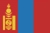

|
Länderinformationen Mongolei
1. Das Wichtigste auf einen Blick2. Sehens- und Hörenswertes
3. Politik & Gesellschaft
4. Schmeckenswertes
5. Medien
6. Reisetipps
1. Wissenswertes
|  | Hier
haben wir die wichtigsten Zahlen und Fakten zur Mongolei
und der mongolischen Sprache zusammengetragen. |
Wir freuen uns, dass Sie sich für einen Mongolischkurs von Sprachenlernen24 entschieden haben. Um Ihre Reisevorbereitungen zu erleichtern und Ihnen einen kleinen Vorgeschmack dessen zu geben, was Sie in der Mongolei erwarten wird, haben wir hier Wissenswertes, Wichtiges, Kurioses, Interessantes, Kulinarisches und noch viele Informationen mehr rund um die Mongolei, ihre Sprache und die Menschen dort für Sie zusammengetragen.
 Die
mongolische Sprache
Die
mongolische Sprache
Mongolisch wird heute von knapp sechs Millionen Menschen gesprochen. Die Sprache kann man in zwei Hauptdialekte unterteilen: Die rund 2,3 Millionen Sprecher in der Mongolei sprechen das Khalkha-Mongolische. In der autonomen Region der Inneren Mongolei, die zur Volksrepublik China gehört, wird von etwa 3,3 Millionen Menschen das sogenannte süd-östliche Mongolisch gesprochen. Ihr Anteil an der Bevölkerung macht jedoch in der Inneren Mongolei nur rund 12 Prozent aus. Kleinere mongolischsprachige Minderheiten finden sich zudem in Russland, Taiwan und Kirgisistan.
Muttersprachler des Khalkha-Mongolischen und des süd-östlichen Mongolisch können sich in der Regel problemlos unterhalten.
Die ältesten schriftlichen Überlieferungen der mongolischen Sprache lassen sich auf das 13. Jahrhundert unserer Zeitrechnung datieren. Das traditionelle Schriftsystem der mongolischen Sprache ist eine modifizierte Variante der uigurischen Schrift.
Die mongolische Schrift war, aufgrund der ungeheuren damaligen Macht des mongolischen Reiches, während des Mittelalters die am weitesten verbreitete Schrift Asiens.
Die Mongolei geriet schließlich in den 1920er Jahren unter wachsenden Einfluss der Sowjetunion, was dazu führte, dass tiefgehende Reformen an der Sprache eingeläutet wurden. So wurde im Jahr 1931 die lateinische Schrift für das Khalkha-Mongolische eingeführt, welche wiederum ab 1937 vom (leicht modifizierten) kyrillischen Alphabet abgelöst wurde. 1941 wurde die traditionelle Schrift offiziell abgeschafft.
In der Inneren Mongolei, die Teil der VR China ist, wurde hingegen seit jeher und wird bis heute in der traditionellen Schrift geschrieben.
Seit Ende der 80er Jahre erlebt die traditionelle mongolische Schrift in der Mongolei jedoch wieder eine (kleine) Renaissance und so finden Sie heute an vielen Geschäften oder bei Firmenlogos wieder diese traditionellen Schriftzeichen. Im normalen Schriftgebrauch, in Zeitungen etc. wird in der Mongolei allerdings weiterhin das kyrillische Alphabet verwendet. In unserem Mongolisch-Sprachkurs finden Sie aus diesem Grund auch die kyrillischen Schriftzeichen - zusammen mit einer Umschrift in lateinischen Buchstaben. Sie finden diese Übertragung unter jedem Wort und lernen schnell die kyrillischen Buchstaben erkennen, schreiben und aussprechen.
Die mongolische Sprache gehört zur altaischen Sprachfamilie, deren einzelne Sprachen in vielen Ländern Südosteuropas, Vorder- und Zentralasiens sowie in Südsibirien und Nordchina gesprochen werden.
Zu den wichtigsten Vertretern der altaischen Sprachen gehören die Turksprachen (z.B. Bulgarisch, Usbekisch, Aserbaidschanisch, Kasachisch und Türkisch) und die mongolische Sprache.
Um Ihnen das kyrillische Alphabet, wie es in der Mongolei verwendet wird, zu zeigen, haben wir für Sie eine Tabelle mit den kyrillischen Buchstaben (jeweils in Groß- und Kleinschreibung) und deren Aussprache zusammengestellt:
Das
mongolische kyrillische Alphabet und dessen Aussprache |
||||||
А
а
|
Б
б
|
В
в
|
Г
г
|
Д
д
|
Е
е
|
Ё
ё
|
a |
b |
v/w |
g |
d |
je |
jo |
Ж
ж
|
З
з
|
И
и
|
Й
й
|
К
к
|
Л
л
|
М
м
|
dsch |
ds/z |
i |
i/j |
k |
l |
m |
Н
н
|
О
о
|
Ө
ө
|
П
п
|
Р
р
|
С
с
|
Т
т
|
n |
o |
ö |
p |
r |
s |
t |
У
у
|
Ү
ү
|
Ф
ф
|
Х
х
|
Ц
ц
|
Ч
ч
|
Ш
ш
|
u |
ü |
f |
ch |
ts |
tsch |
sch |
Щ
щ
|
Ъ
ъ
|
Ы
ы
|
Ь
ь
|
Э
э
|
Ю
ю
|
Я
я
|
schtsch |
(-) |
y |
(-) |
e |
ju |
ja
|
 Bevölkerung
Bevölkerung
Die Mongolei hat knapp drei Millionen Einwohner und ist gemessen an ihrer Größe nur sehr dünn besiedelt – lediglich 1,9 Menschen kommen durchschnittlich auf einen Quadratkilometer Fläche. Zum Vergleich: in Deutschland leben auf einem km² etwa 290 Einwohner. Hinzu kommt, dass allein in der Hauptstadt Ulaanbaatar (mit rund einer Million Einwohnern) etwa jeder dritte Mongole lebt und so die durchschnittliche landesweite Bevölkerungsdichte weit geringer ist als die statistischen 1,9 Bewohner/km². Die Mongolei ist somit der Staat mit der niedrigsten Bevölkerungsdichte der Welt.
Ethnisch gesehen hat die Mongolei eine sehr homogene Bevölkerung: 94,9% der Einwohner sind mongolischstämmig. Lediglich 5% sind Angehörige von Turkvölkern (vorwiegend Kasachen) und 0,1% Chinesen oder Russen.
Das Durchschnittsalter der mongolischen Bevölkerung liegt bei knapp 25 Jahren und ist damit um etwa 18 Jahre niedriger als das von Österreich oder Deutschland.
Die durchschnittliche Lebenserwartung liegt in der Mongolei bei 65 Jahren (Männer) und knapp 70 Jahren (Frauen).
 Fläche
Fläche
Das mongolische Staatsgebiet umfasst eine Fläche von rund 1.560.000 km² und ist damit mehr als viermal so groß wie die Bundesrepublik Deutschland. Gemeinsame Grenzen hat die Mongolei im Süden zur VR China (die Länge der gemeinsamen Grenze beträgt rund 4.600 km Länge) und im Norden zu Russland (knapp 3.500 km).
 Währung
Währung
In der Mongolei wird mit dem Tögrög/Tugrik (төгрөг) bezahlt. Dieser war früher unterteilt in 100 Möngö, jedoch ist diese Unterwährung heute nicht mehr in Gebrauch. Einen tagesaktuellen Wechselkurs von Tögrög zum Euro finden Sie im Internet (geben Sie einfach bei einer Suchmaschine den Begriff „Währungsrechner“ ein) oder Sie erfragen diesen bei Ihrer Bank.
 Ökonomische
Situation
Ökonomische
Situation
Traditionell ist die Mongolei von nomadischer Viehwirtschaft geprägt, in der hauptsächlich Schafe, Ziegen, Rinder, Kamele und Pferde gehalten werden und deren Milch, Fleisch, Wolle und Leder gewonnen wird. Ackerbau findet – aufgrund der langen und harten Winter und der kargen Landschaft – nur auf wenigen Promille der Landesfläche statt. Die am häufigsten angebauten Erzeugnisse sind hier Weizen, Gerste und Gemüse sowie Tierfutter.
Bis heute sind rund 40% aller Mongolen im landwirtschaftlichen Sektor tätig.
Die wichtigsten Exportgüter der Mongolei sind Kleidung, (Schafs-)Wolle, Kaschmirwolle und Vieh sowie Kupfer, Fluorit und verschiedene Metalle. In den letzten Jahrzehnten hat zudem der Abbau von Bodenschätzen stark zugenommen. Gewonnen wird hier neben Metallen wie Gold, Silber und Kupfer vor allem Kohle.
Die Mongolei steht unter hohem ökonomischen Einfluss ihrer Nachbarstaaten: Die zentralen Handelspartner der Mongolei sind China (an das fast drei Viertel aller Exporte geliefert werden) und Russland (das rund 80% des mongolischen Mineralölbedarfs deckt und beträchtliche Mengen elektrischer Energie liefert). Weitere Handelspartner sind vor allem Kanada, die USA und Japan.
Eine wichtige Einnahmequelle des Landes stellen auch die Überweisungen von Devisen der im Ausland lebenden Mongolen an ihre Verwandten in der Heimat dar.
Die Mongolei ist ein relativ armes Land, rund ein Drittel der Bevölkerung lebt unterhalb der Armutsgrenze und die Säuglingssterblichkeit ist mehr als 10 mal so hoch wie beispielsweise in Deutschland. Gerade in der Hauptstadt Ulaanbaatar treten die sozialen Unterschiede besonders deutlich hervor - neben einigen wenigen reichen gibt es viele arme und obdachlose Menschen.
 Zeitzone
Zeitzone
Die Mongolei weist aufgrund ihrer Größe unterschiedliche Zeitzonen auf.
Im Osten des Landes gibt es einen Zeitunterschied von 8 Stunden zu Mitteleuropa, während die Differenz im Westteil des Landes nur 7 Stunden beträgt. Um Ihnen ein anschauliches Beispiel zu geben: wenn es bei Ihnen in München 12 Uhr mittags ist, zeigt die Uhr in Ulaanbaatar bereits 20 Uhr abends. Eine Sommerzeit gilt in der Mongolei übrigens nur in der Zentralmongolei, jedoch nicht im West- und Ostteil des Landes.
Im nächsten Kapitel haben wir einige ausgesuchte Reiseempfehlungen zusammen gestellt.